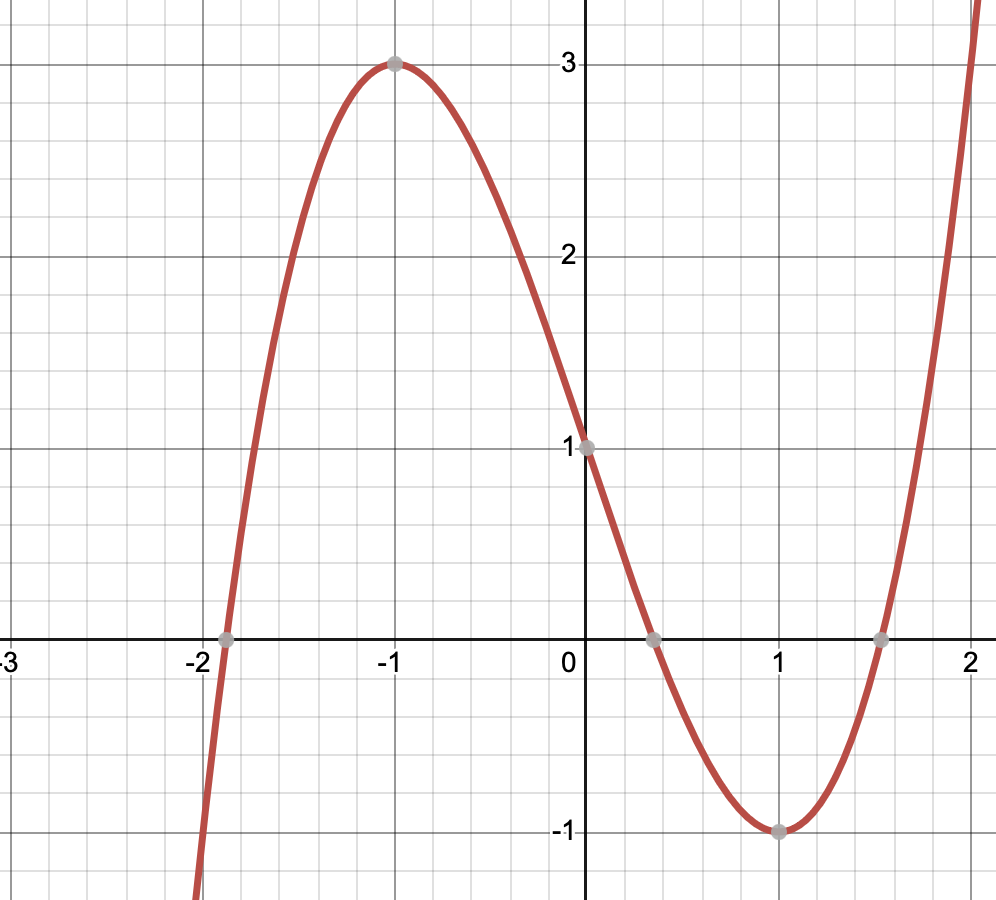

Konklusion:
\(f\) er voksende i \(]-\infty; -1]\) og i \([1; \infty[\), samt aftagende i \([-1; 1]\).
Opgave 1: Analytisk monotonibestemmelse uden hjælpemidler
En funktion er givet ved:
$$ f(x) = x^2 - 4x + 5 $$
a) Bestem \(f'(x)\) og løs ligningen \(f'(x) = 0\).
Hint: Brug regnereglen \((x^2)' = 2x\) og \((k \cdot x)' = k\). Sæt derefter udtrykket lig 0.
Løsning del a:
Differentiation giver \(f'(x) = 2x - 4\).
Sættes lig 0: \(2x - 4 = 0 \iff 2x = 4 \iff x = 2\).
b) Hvilket af følgende udsagn beskriver monotoniforholdene for \(f\) korrekt?
Løsning del b:
Test fortegnet for \(f'(x) = 2x - 4\):
For \(x = 0\) fås \(f'(0) = -4 < 0\) (aftagende).
For \(x = 3\) fås \(f'(3) = 2(3) - 4 = 2 > 0\) (voksende).
Dermed er svarmulighed B korrekt.
Opgave 2: Grafisk monotonibestemmelse
Nedenfor ses grafen for en funktion \(f(x)\):

a) Hvad er værdien af differentialkvotienten \(f'(-1)\)?
Hint: Kig på tangentens hældning i punktet \((-1, 3)\). Grafen har et lokalt ekstremum (toppunkt) her.
Løsning del a:
Da grafen har et lokalt maksimum i \(x = -1\), er tangenten vandret. Derfor er \(f'(-1) = 0\).
b) I hvilket interval er differentialkvotienten negativ (\(f'(x) < 0\))?
Løsning del b:
Ifølge Monotoni-sætningen er \(f'(x) < 0\), hvor grafen er aftagende. Ud fra grafen ses det, at grafen går nedad fra toppunktet i \(x = -1\) til dalpunktet i \(x = 1\). Svaret er derfor A.
Opgave 3: Tredjegradspolynomium (For de hurtige)
En funktion er givet ved udtrykket:
$$ f(x) = \frac{1}{3}x^3 - x^2 - 3x + 2 $$
Bestem uden hjælpemidler \(x\)-værdierne for funktionens lokale ekstrema (maksimum og minimum).
Hint:
1. Differentier \(f(x)\): Husk at \((\frac{1}{3}x^3)' = x^2\).
2. Løs andengradsligningen \(f'(x) = 0\): \(x^2 - 2x - 3 = 0\).
3. Opstil en monotonilinje med testpunkter for at se, hvilket punkt der er lokalt maks/min.